S9 · STİL SAYFASI EKİK8'e eklenenler: baskın işaretleri, damgalar, kenar paneli malzemesi, düğme durumları, harita işaretleri · 1.2: üç makine, dört niyet, on bölge özelliği
A · MAKİNE TÜRLERİTür biçimden ve etiketteki işaretten okunur; gövde rengi ortak, kırmızı yalnız göz ve halkada. 1.2: zırhlı dron, çoğaltıcı, patlayan robot.
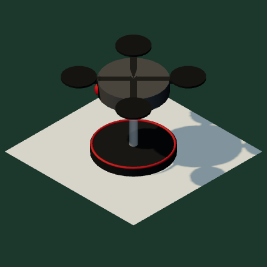
DRON
Dört rotor, ince ayak, yüksek tepe noktası (0,52).
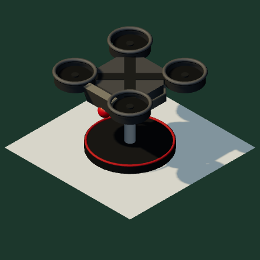
1.2
ZIRHLI DRON
Dron ailesi: aynı ayak, dört rotor. Rotorlar halka kılıfta; sekizgen gövde, çelik zırh bandı ve ön levha. Tepe 0,53.
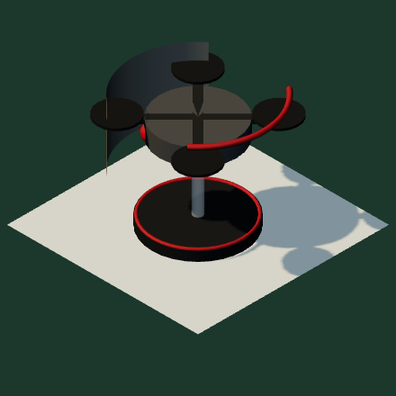
KALKAN DRONU
Dron + yay biçimli kalkan levhası, kırmızı kenar.
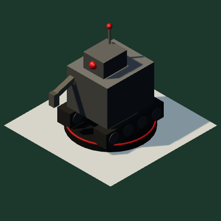
BAKIM ROBOTU
Kutu gövde, yanda anahtar kol, anten, palet.
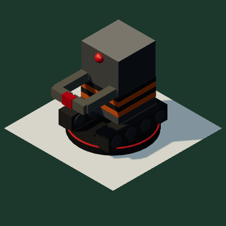
KİLİTLEYİCİ
Öne uzanan kıskaç, gövdede sarı-siyah şerit, palet.
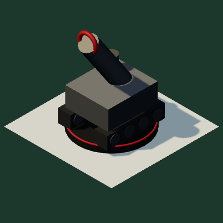
HAVAN ROBOTU
Alçak paletli gövde, göğe bakan çapraz namlu.
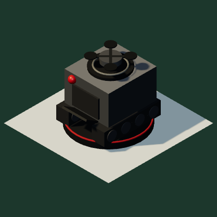
1.2
ÇOĞALTICI
Paletli hangar gövde, önde karanlık bölme ve rampa; üst pistte göndereceği küçük dron. Tepe 0,55.
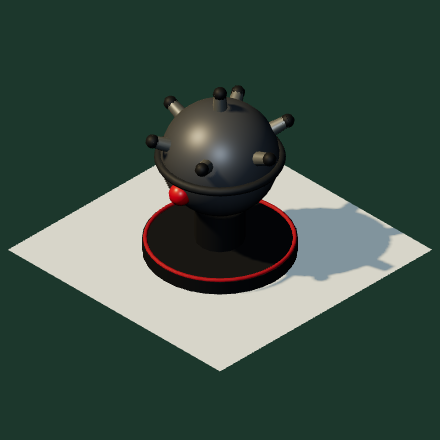
1.2
PATLAYAN ROBOT
Deniz mayını gövde: küre ve fünye boynuzları, kısa ayak. Tepe 0,66.
Gövde #5B5E62 / yan #46494D / gölge #34373A; ayrıntı #9A1E14 yalnız göz ve taban halkasında. Zırh çelik #9A9C98 (plaka, kalkan, zırhlı dron). Taban: dron ailesi Ø0,48–0,52, patlayan Ø0,52, paletliler Ø0,62 (palet 0,54 × 0,46). Etiketteki işaret haritadaki imza işaretiyle aynı çizim (36 birim, çizgi 2,4–4,4).
B · CAN, ZIRH, PLAKAPip 11 px; dolu = var, kırmızı kenarlı boş = kayıp.
C · NİYET OKLARI VE SIRA#B8241A, her zaman üstte (ZTest Always), gölge (1,5; 2) %28.
Ateş düz 3,4 px; yakın dövüş yay 4,6 px (yükselme 14–26 px) + üç darbe çizgisi; kilit yay + Ø26 kıskaç rozeti; onarım noktalı 2,6 px + anahtar rozeti, “+1”. Bayrak: iğne 2 × 34 #5E5A54, kâğıt 30 × 28, rakam CP 700 20; robotun tepe noktasında, sağa açılır. Belki: kesik çizgi 10/6, turuncu kesik kenar + Kalam “?”. Tarandı: mavi kenar + ONAYLANDI.
C2 · YENİ NİYETLER (1.2)Zarar verenler #B8241A; zarar vermeyenler #854005 + çizgi türü + rozet. Sıra bayrağı, kesinlik ve yürütme durumları C’deki gibi.
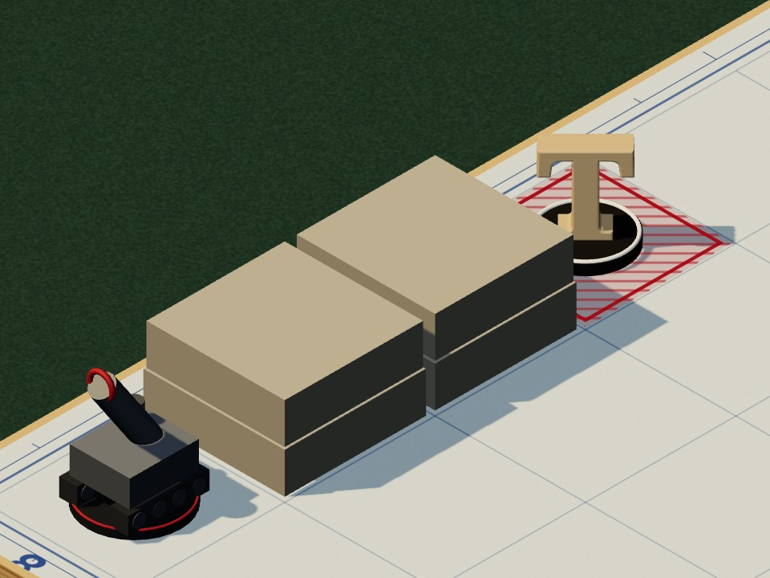
HAVAN ATIŞIlob1.2
Havan robotu → üç kare öte, engelin üstünden. Yüksek yay 3,4 px: tepe kirişin 0,4’ü (en az 90 px), namlu ağzından başlar, hedef parçanın tepesinin 10 px üstünde ok ucu 16 ile biter. Hedef kare isabet taramalı.
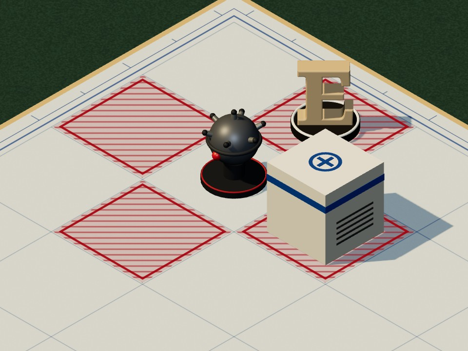
PATLAMAblast1.2
Patlayan robot, bulunduğu yerde. Ok yok: dört komşu kare isabet taramalı, artı biçimli dış kontur 2,4 px, dört kısa çıkış oku (0,30 → 0,66 birim, ok ucu 12). Burada uygulanıyor: kalem konturun altında, bayrak dolu.
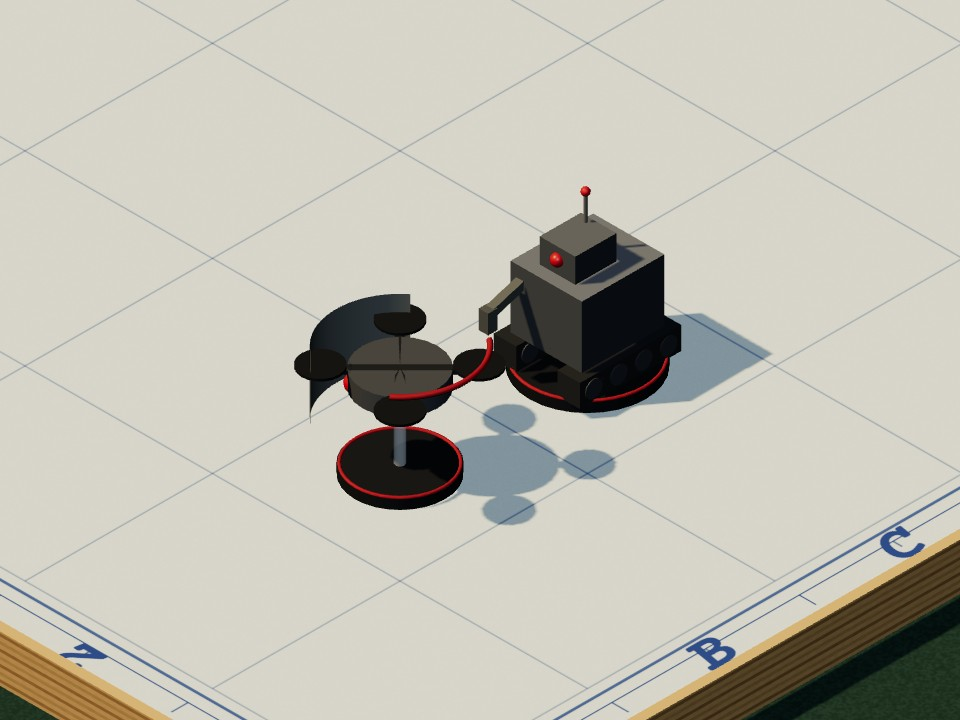
KALKANshield1.2
Kalkan dronu → yanındaki zırhsız makine. Hasar yok: #854005, çift çizgi 2 × 1,6 px (arası 3,2), hafif yay 20 px, ok ucu yok. Kalkan rozeti Ø28, alan makinenin tepesinin 22 px üstünde.
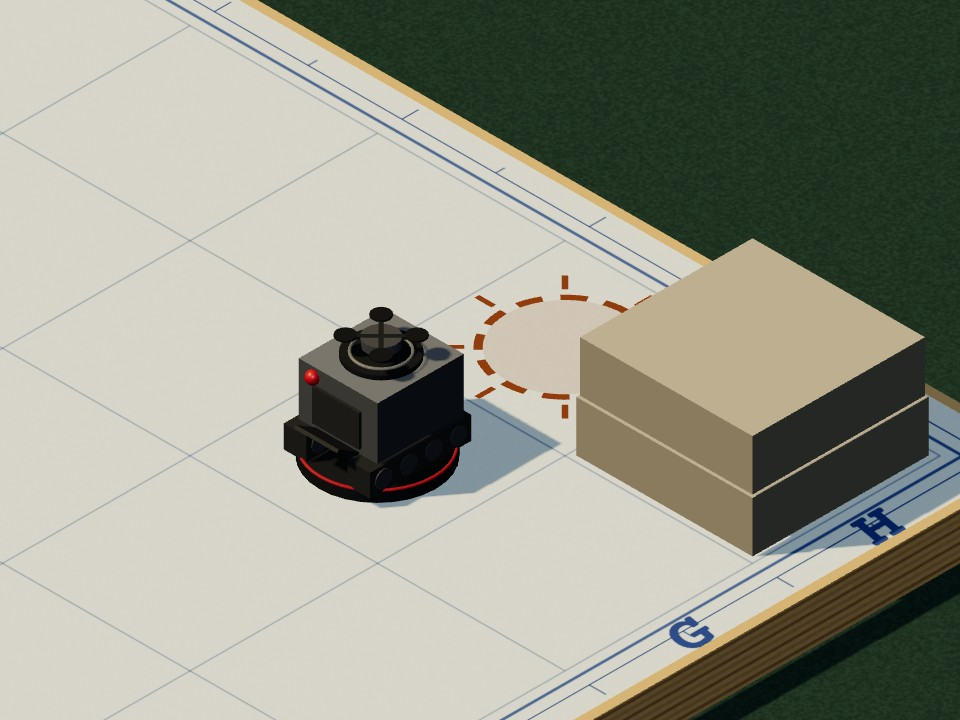
KOPYALAMAclone1.2
Çoğaltıcı → yanındaki boş kare. Hasar yok: #854005 noktalı kısa çizgi (2,6 px, 2/4) + ok ucu 11; karede kesik uyanma halkası (r 0,33, 12 kesik, 8 ışın) + dron rozeti Ø24. Uygulanınca kırmızı uyanma işaretine döner.
Kırmızı yalnız uzmana ya da sivile zarar veren niyette (ateş, yakın dövüş, kilit, havan, patlama). Kalkan ve kopyalama zarar vermez: #854005, ve renk tek başına taşımaz; çift ya da noktalı çizgi ve rozet ayırır. Belki: çizgi kesik 10/6 (çift çizgide ikisi birden), kare ve alan işaretleri hitMaybeLie. Onarım 1.1’deki gibi kırmızı noktalı kaldı; bu kurala çekilecekse tek değer: intents.repair.color → #854005.
D · TUR ŞERİDİ VE EVREHücre 34 px (burada 30); son iki tur önceden işaretli.
1/812345678şimdiki mürekkep dolu5/812345678geçmiş #B9C3BE7/812345678“kalan 1 tur”8/812345678SON TUR
SIRA SENDEMAKİNELEROPERASYON BİTTİevre: biçim (daire, baklava, kare) + kelime
E · SONUÇ DAMGALARIDamga tek kez basılır; başlık yerine geçer. Çift kenar = sonuç, düz kenar = durum.
SEKTÖR GERİ ALINDIGERİ ÇEKİLDİKAZANILDIKAYBEDİLDİDAĞILMAVURULDUSIZMABAŞARILIBAŞARISIZYENİDEN İŞGALUYANDIEN ÜST SEVİYEBAKILDIKAPANDI
Renk anlamı: mavi geri alınan, yeşil iyi, kırmızı işgal ve tehdit, gri kullanılmış. CP 700, 18–88 px; 9 dilimli çerçeve + metin, mürekkep dokusu %10.
Yetersiz kaynakta düğme açık kalır: eksik kalem üstü çizik + “yetersiz” satırı; basınca ilgili sayaç iki kez titrer (0,1 s). Devre dışında neden yazılır.
H · HARİTA VE ODA İŞARETLERİS1–S5’te eklenenler; dünya dokusunda ve kâğıtta aynı çizim. 1.2: on bölge özelliği, üç imza.
SEKTÖR
alındıhazırkilitliyeniden işgal
Doku 38 px, ekranda ≥ 24 px.
TEHDİT KADEMESİ
1/42/43/44/4
Dolu basamak sayısı + sayı.
YZ ALARMI · ± FİŞİ
9/10
+2,5−1,4±0
8–10 kırmızı bölge; panoda lamba ≥ 8.
SAHA · BÖLGE ÖZELLİĞİ (12) · fişte çerçeveli 30 px, haritada doku 34 px
Bölge özelliği haritada cephe bloğunda ve işaretler kutusunda, fişin SAHA satırında çerçeveli sürümle. İmza aynı çizimle baskın etiketinde. Harf ve sayı yok; koyu etiket = 1.2’de eklenen. Gri tonlamada her işaret biçiminden ayrılır.